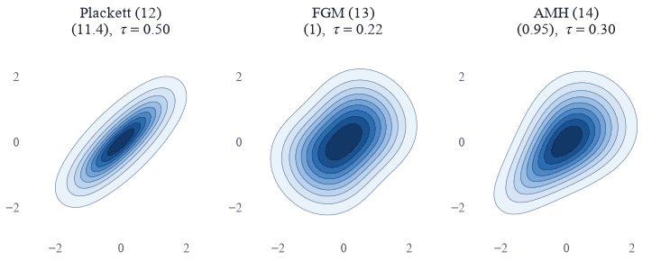

Other parametric families¶
Two hand-coded families belong to none of the constructions on the previous pages: Plackett and Farlie–Gumbel–Morgenstern. Both are exchangeable, radially symmetric, free of tail dependence and cover negative dependence through their own parameter, so fortvine registers no rotations for them. The Ali–Mikhail–Haq copula (code 14) is Archimedean and is described on the Archimedean page, together with BB10 (code 21), which contains it.
The second half of this page explains which families from the literature fortvine leaves out on purpose, and why.

Plackett at \(\tau = 0.5\), and the strongest positive members of FGM (\(\theta = 1\)) and AMH (\(\theta = 0.95\)), density contours in normal scores. FGM and AMH cannot reach strong dependence.
Plackett¶
| Property | Value |
|---|---|
| Code | 12 (FV_PLACKETT) |
| Parameter, box | \(\theta \in [10^{-3}, 10^3]\); \(\theta = 1\) is independence, \(\theta < 1\) negative dependence |
| Kendall's \(\tau\) | no closed form; \(\tau \in [-0.926, 0.926]\) in the box |
| Spearman's \(\rho_S\) | \(\dfrac{\theta + 1}{\theta - 1} - \dfrac{2\theta\log\theta}{(\theta - 1)^2}\) |
| \(\lambda_L\), \(\lambda_U\) | \(0\), \(0\) |
| Exchangeable | yes, and radially symmetric |
| Rotations | none |
With \(s = 1 + (\theta - 1)(u + v)\) and \(D = s^2 - 4\theta(\theta - 1)\, uv\):
Plackett (1965) built the family from a constant cross-product ratio: for every point \((u, v)\),
so \(\theta\) is a global odds ratio, the continuous analogue of the odds ratio of a 2×2 table. It reaches strong dependence of both signs without any tail dependence, which makes it a symmetric alternative to Frank with a somewhat different body shape. fortvine inverts the h-function numerically.
Farlie–Gumbel–Morgenstern (FGM)¶
| Property | Value |
|---|---|
| Code | 13 (FV_FGM) |
| Parameter, box | \(\theta \in [-1, 1]\) |
| Kendall's \(\tau\) | \(2\theta/9\), so \(\lvert\tau\rvert \le 2/9\) |
| Spearman's \(\rho_S\) | \(\theta / 3\) |
| \(\lambda_L\), \(\lambda_U\) | \(0\), \(0\) |
| Exchangeable | yes, and radially symmetric |
| Rotations | none |
The FGM copula (Morgenstern 1956; Gumbel 1960; Farlie 1960) is the independence copula plus a single product perturbation. That makes it the simplest possible model for weak dependence, and also limits it: \(\lvert\tau\rvert \le 2/9\) and \(\lvert\rho_S\rvert \le 1/3\). In vines it is useful in the higher trees, where the conditional dependence is often weak and a one-parameter family with a polynomial density is cheap to fit.
Families not implemented¶
fortvine's family list is meant for likelihood-based fitting and selection inside vines. That rules out several well-known copulas. The reasons fall into four groups.
Singular families¶
A copula with a singular component puts positive probability on a curve of zero area. Such a copula has no density on that part of its mass, so the product of densities that a vine likelihood is made of does not describe the model, and an observation on the curve has no finite likelihood contribution. Left out for this reason:
- Marshall–Olkin (Marshall & Olkin 1967) and its one-parameter case Cuadras–Augé (Cuadras & Augé 1981): mass on the curve \(u^\alpha = v^\beta\) (the diagonal for Cuadras–Augé);
- Fréchet and Mardia families, mixtures of the comonotone, independence and countermonotone copulas: mass on the two diagonals;
- Lévy-frailty, Durante–Salvadori and similar shock-model constructions;
- Archimedean copulas with a non-strict generator (\(\varphi(0) < \infty\)), for example Nelsen's (2006) families 4.2.2, 4.2.7, 4.2.8 and 4.2.18: they carry mass \(-\varphi(0)/\varphi'(0^+)\) on their zero curve \(\varphi(u) + \varphi(v) = \varphi(0)\).
The Raftery copula (Raftery 1984) is sometimes listed as singular. It is not: it is absolutely continuous, with a density that has a kink along the diagonal. It is simply not implemented (see the candidates below).
Families with a zero-density region¶
Some absolutely continuous copulas have a density that is exactly zero on a region of positive area. One pseudo-observation in that region sends the log-likelihood to \(-\infty\), and because the region moves with the parameter the likelihood is discontinuous. In a vine, the conditional pseudo-observations of the higher trees fill the whole unit square, so such regions are hit sooner or later. Left out for this reason:
- Nelsen's (2006) families 4.2.11, 4.2.15, 4.2.21 and 4.2.22;
- the negative-parameter branch of Clayton (\(-1 \le \theta < 0\)), whose density vanishes wherever \(u^{-\theta} + v^{-\theta} < 1\) (negative dependence comes from rotating Clayton instead);
- the Pearson type II copula, whose elliptical support excludes the corners of the square.
Families that need special functions per evaluation¶
Every log-density evaluation in a fit is repeated for every observation and every optimiser step, and fortvine differentiates it exactly with dual numbers. Families whose density needs an inverse special function with a parameter-dependent shape at every point are therefore very expensive, and their exact parameter derivatives need implicit differentiation of that inverse:
- the GB2 (generalised beta of the second kind) copula (Yang, Frees & Zhang 2011): two inverse regularised incomplete beta functions per observation;
- the Joe–Ma integrated positive stable copula (Joe & Ma 2000), with generator \(\psi(s) = Q(1/\alpha, s^\alpha)\) (the regularised upper incomplete gamma function): an inverse incomplete gamma per observation;
- the inverse-gamma Laplace transform generator, \(\psi(s) = 2 s^{\alpha/2} K_\alpha(2\sqrt{s}) / \Gamma(\alpha)\): a modified Bessel function of parameter-dependent order, inverted numerically for every observation;
- skew-normal and skew-t copulas: no closed-form quantile function of the margins, and the Azzalini–Capitanio skew-t copula needs four parameters, above fortvine's limit of three per pair.
Weak polynomial families¶
Copulas of the form "independence plus a bounded polynomial perturbation" (Huang–Kotz, Bekrizadeh, Bozkurt, Lai–Xie and similar FGM extensions) are absolutely continuous and cheap, but their attainable dependence is small (\(\lvert\rho_S\rvert\) around \(0.4\) at most), so they add little beyond FGM. The Durrleman cubic family has \(\tau = \rho_S = 0\) for all parameter values.
Candidates for future versions¶
These absolutely continuous families with at most three parameters are not in fortvine yet but would fit its framework:
| Family | Parameters | What it would add |
|---|---|---|
| Raftery (1984) | 1 | closed \(\tau = 2\theta/(3 - \theta)\) and \(\lambda_L = 2\theta/(1 + \theta)\), a lower tail stronger than Clayton's at equal \(\tau\) |
| Gumbel–Barnett (Nelsen 4.2.9) | 1 | weak negative dependence, \(\tau \in [-0.361, 0]\) |
| Nelsen 4.2.16 | 1 | \(\lambda_L = 1/2\) for every parameter, everything in closed form |
| Cubic-section copulas (Nelsen, Quesada-Molina & Rodríguez-Lallena 1997) | 2 | the strongest smooth FGM-type family, \(\lvert\rho_S\rvert \le 0.577\), non-monotone shapes |
| Roch & Alegre (2006) | 2 | Gumbel with an extra body parameter |
| Bilogistic (Smith 1990), negative bilogistic (Coles & Tawn 1994) | 2 | two-parameter asymmetric EV families; each needs a scalar root per observation |
Duplicates under other names¶
Many families in the literature are reparametrisations of families fortvine already has:
| Family as published | Equals |
|---|---|
| power-variance-function (PVF) and inverse-Gaussian frailty copulas | BB9 (code 20) |
| Nelsen 4.2.12 and 4.2.14 | BB1 with \(\theta = 1\), and with \((\theta, \delta) = (1/\theta', \theta')\) |
| Nelsen 4.2.13 with \(\theta \ge 1\) | BB9 with \(\delta = 1\) |
| Nelsen 4.2.19 and 4.2.20 | BB2 with \(\theta = 1\), and with \(\delta = 1\) |
| Kimeldorf–Sampson, Cook–Johnson, Burr | Clayton (or its survival copula) |
| Koehler–Symanowski | Khoudraji-Clayton (code 20200) |
| Khoudraji-Gumbel | Tawn's asymmetric logistic (code 11) |
| Khoudraji-Galambos | asymmetric negative logistic (code 10008) |
References¶
- Coles, S. G. and Tawn, J. A. (1994). Statistical methods for multivariate extremes: an application to structural design. Applied Statistics 43, 1–48.
- Cuadras, C. M. and Augé, J. (1981). A continuous general multivariate distribution and its properties. Communications in Statistics A 10, 339–353.
- Farlie, D. J. G. (1960). The performance of some correlation coefficients for a general bivariate distribution. Biometrika 47, 307–323.
- Gumbel, E. J. (1960). Bivariate exponential distributions. Journal of the American Statistical Association 55, 698–707.
- Joe, H. and Ma, C. (2000). Multivariate survival functions with a min-stable property. Journal of Multivariate Analysis 75, 13–35.
- Marshall, A. W. and Olkin, I. (1967). A multivariate exponential distribution. Journal of the American Statistical Association 62, 30–44.
- Morgenstern, D. (1956). Einfache Beispiele zweidimensionaler Verteilungen. Mitteilungsblatt für Mathematische Statistik 8, 234–235.
- Nelsen, R. B. (2006). An Introduction to Copulas, 2nd ed. Springer.
- Nelsen, R. B., Quesada-Molina, J. J. and Rodríguez-Lallena, J. A. (1997). Bivariate copulas with cubic sections. Journal of Nonparametric Statistics 7, 205–220.
- Plackett, R. L. (1965). A class of bivariate distributions. Journal of the American Statistical Association 60, 516–522.
- Raftery, A. E. (1984). A continuous multivariate exponential distribution. Communications in Statistics A 13, 947–965.
- Roch, O. and Alegre, A. (2006). Testing the bivariate distribution of daily equity returns using copulas. An application to the Spanish stock market. Computational Statistics & Data Analysis 51, 1312–1329.
- Smith, R. L. (1990). Extreme value theory. In Handbook of Applicable Mathematics, Supplement, Wiley, 437–472.
- Yang, X., Frees, E. W. and Zhang, Z. (2011). A generalized beta copula with applications in modeling multivariate long-tailed data. Insurance: Mathematics and Economics 49, 265–284.